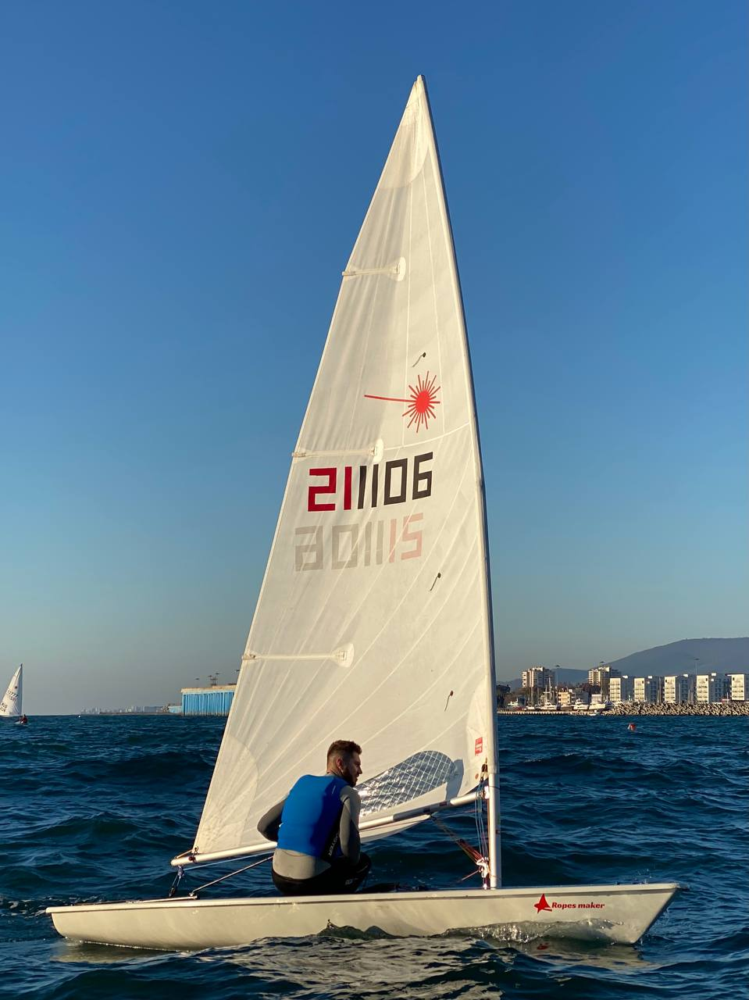

Hi! I am Nikita Koval and you are on my personal website.
I am a researcher in the Kotlin team at JetBrains and
lead a Concurrent Computing lab
at JetBrains Research, working on a PhD in the field of concurrency at the same time.
My primary research interests are concurrent data structures and algorithms, their verification, and practically applicable code analysis.
Here you can find all the recent information about me and my projects.
I am passionate about outdoor activities, such as cycling,
skiing, or hiking when not working. Yet, the true love is
sailing on small sports boats — that's me on a laser on the right ⛵
Do not hesitate to drop me a line if we have an interesting topic to discuss!
News:
- 2022-05-10: Hydra'22 will take place online this year, and I am excited to help the conference as a PC member.
Additionally to that, I will give a short series on "Introduction to Concurrent Programming" 🎉
- 2022-02-22: JetBrains just publushed a short video about my lab on at JetBrains Research 📺
- 2021-12-02: Our paper on practical priority schedulers is accepted at PPoPP!
In short, we took simple and scalable but inefficient Multi-Queue design, applied a bunch of
industrial techniques with various tricks, and outperformed the state-of-the-art 💪
- 2021-11-23: We published a pre-print of our paper on CancellableQueueSynchronizer, an abstraction
for building efficient fair and abortable synchronization primitives such as mutexes, semaphores, barriers, count-down-latches, and blocking pools.
- 2021-05-19: Our work with Alexander Fedorov (JetBrains Research) and Dan Alistarh (IST Austria)
on the first truly concurrent algorithm for the dynamic connectivity problem has been accepted at SPAA!
The pre-print is available on arXiv.
- 2021-02-24: Some time ago, we finally released bounded model checking in Lincheck --
a framework for testing concurrency on JVM. See a blog post
for a short overview of how it and about Lincheck in general!
I am incredibly happy to have a chance to work with the following people:
- Roman Elizarov (Kotlin team lead @ JetBrains – he supervises me in the industry)
- Dan Alistarh (Professor @ IST Austria – he supervises me in academia)
- Alexander Fedorov (Researcher @ JetBrains)
- Maksim Zuev (Part-time Researcher @ JetBrains)
- Dmitry Khalanskiy (Part-time Researcher @ JetBrains)
- Maria Sokolova (Part-time Researcher @ JetBrains)
I was delighted to supervise these talented students:
- Anastasiia Postnikova (2021, BSc @ ITMO University)
- Maksim Zuev (2021, BSc @ HSE University, now Researcher and Software Developer @ JetBrains)
- Olga Lupuleac (2021, BSc @ HSE University, now Software Developer @ Databricks)
- Alexander Gaev (2021, BSc @ HSE University, now Software Developer @ Amazon)
- Alexander Fedorov (2020, BSc @ HSE University, now Researcher @ JetBrains)
- Maria Sokolova (2019, BSc @ ITMO University, now Software Developer @ JetBrains)
I was also lucky to work with these people:
- Olga Lupuleac (2021–2022, Researcher @ JetBrains ~> Software Developer @ Databricks)
- Anton Udovichenko (2021, Intern @ JetBrains ~> Bachelor Student @ MIPT)
- Dmitriy Naumov (2021, Intern @ JetBrains ~> Bachelor Student @ ITMO University)
- Viktoriia Erokhina (2020, Intern @ JetBrains ~> Software Engineer @ Google)
- Alisa Koroleva (2019, Intern @ JetBrains ~> Software Developer @ IFuture)
- Anna Kustareva (2016, Intern @ Devexperts ~> Software Developer @ NetCracker ~> Teamlead @ Yandex)
- Dmitry Tsitelov (Head of dxLab @ Devexperts, I was in his team in 2016–2018)
{% capture site_tags %}{% for tag in site.tags %}{{ tag[1].size }}#{{ tag | first | downcase }}#{{ tag | first }}{% unless forloop.last %},{% endunless %}{% endfor %}{% endcapture %}
{% assign tag_hashes = site_tags | split:',' | sort %}